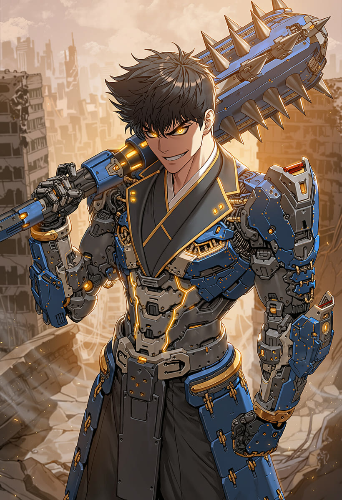
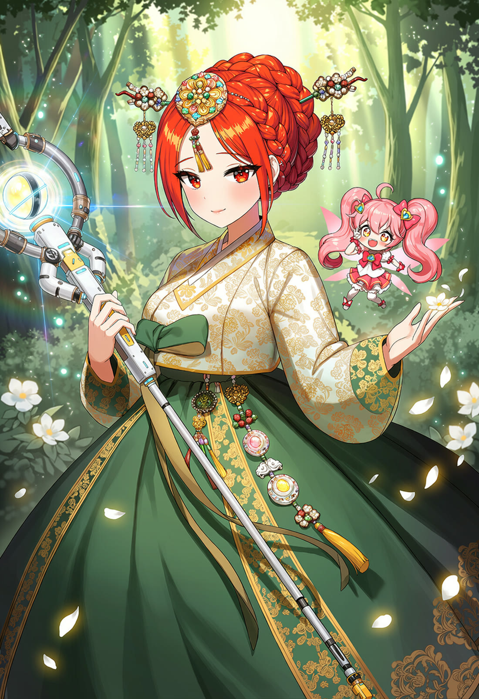
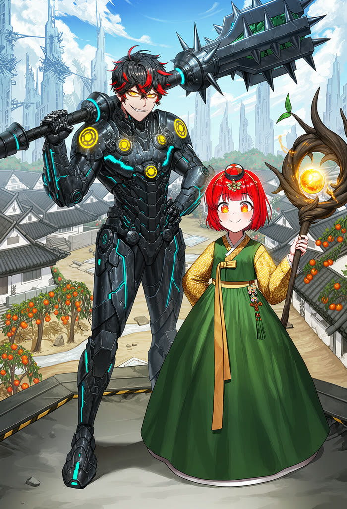
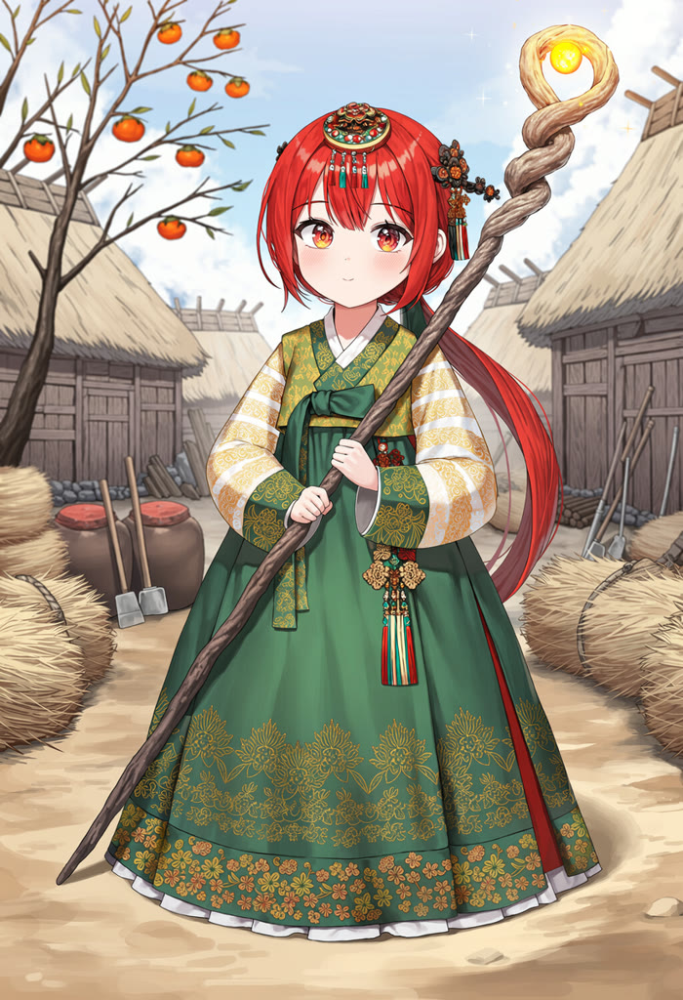

TJ 미디어 반주곡 기준 · 번호표로 찾는 노래방
부르고 싶은 곡을,
번호로 찾는다
한국노래방 70곡, 일본노래방 61곡. 곡 목록은 블로그 번호표에, 연습은 유튜브 재생목록에 있습니다. 광고 없이 바로 부르세요.
- 70한국노래방
- 61일본노래방
- 10재생목록
- 316총 곡 수

KARAOKE
노래방
곡 번호는 블로그에서, 연습은 재생목록에서.

BLOG
블로그 최신
한국노래방
한국노래방 70곡 · 가수별 원곡 목록
MC THE MAX · WOODZ · izi · 윤종신 · 이창섭 · 나윤권 · 싸이 · SPAPA · 한로로 · tuki. · 바이브 · 박명수 · 야다 · 이승철
읽기 ↗ 일본노래방 일본노래방 61곡 · 반주곡 번호표J-POP TOP 100 기준. 번호로 곡을 찾고 바로 부르는 방식.
읽기 ↗ 가이드 노래방 반주곡 찾는 방법한국·일본 노래방을 한눈에 비교하고 고르는 요령.
읽기 ↗ ST011 ST011 연재 통합 목록웹소설 4화 · 릴스 12편 · 블로그 글을 한 페이지에.
읽기 ↗PLAYLISTS
유튜브 재생목록
곡을 고르지 않아도, 틀어 두면 연습이 됩니다.
해당 재생목록이 없습니다.
ST011
웹소설 · 릴스 · 블로그

노벨피아 연재 · 무료
외계 침략자들의 머리통을 깨부수는 중입니다
조선 밭두둑에 떨어진 외계 함선. 삽을 든 농부가 몰수 통지서를 든 양반보다 먼저 깨달은 것 — 이 싸움은 힘이 아니라 머리통의 문제라는 것.